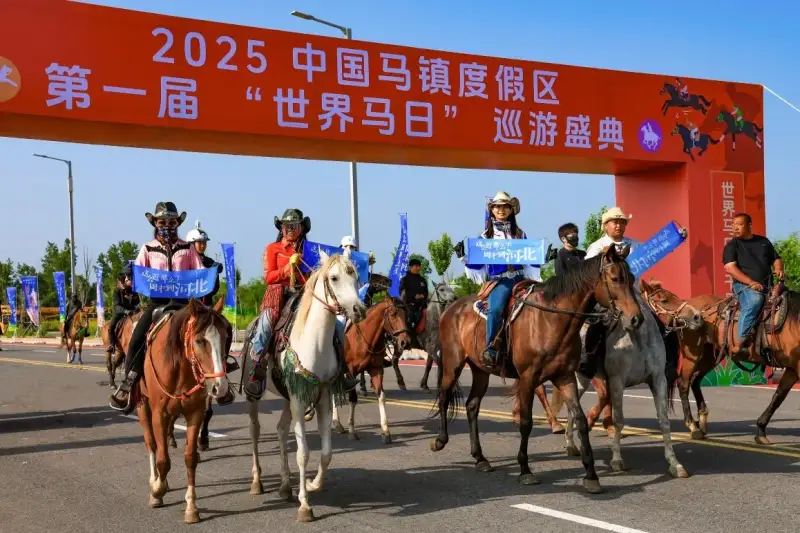
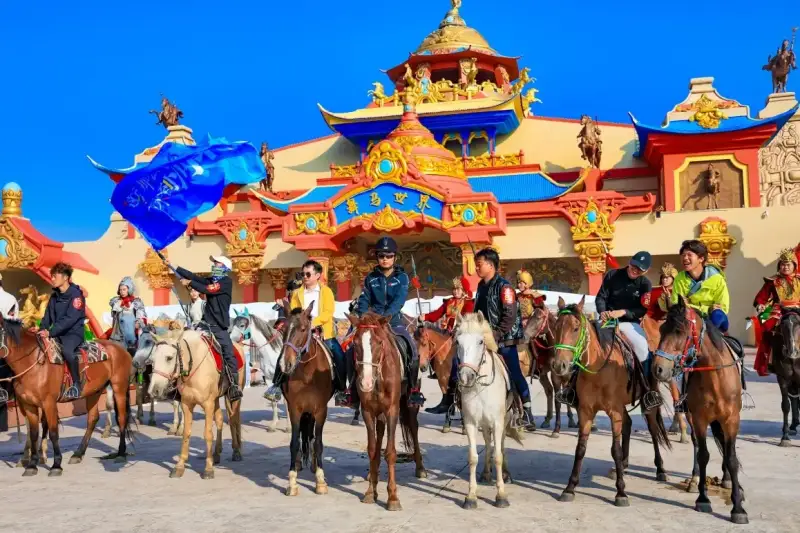
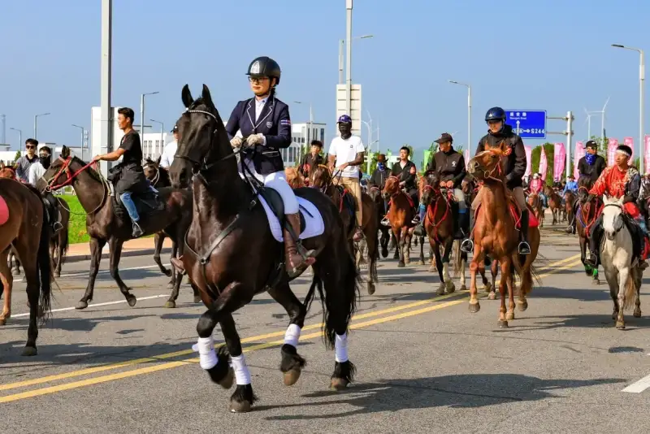
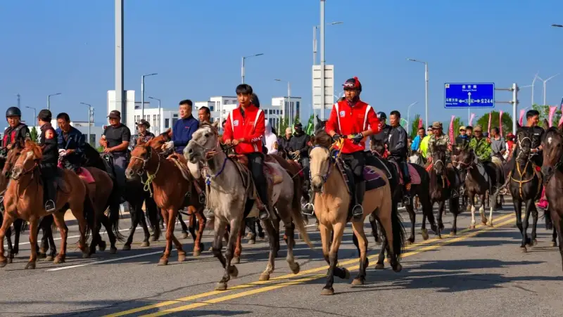
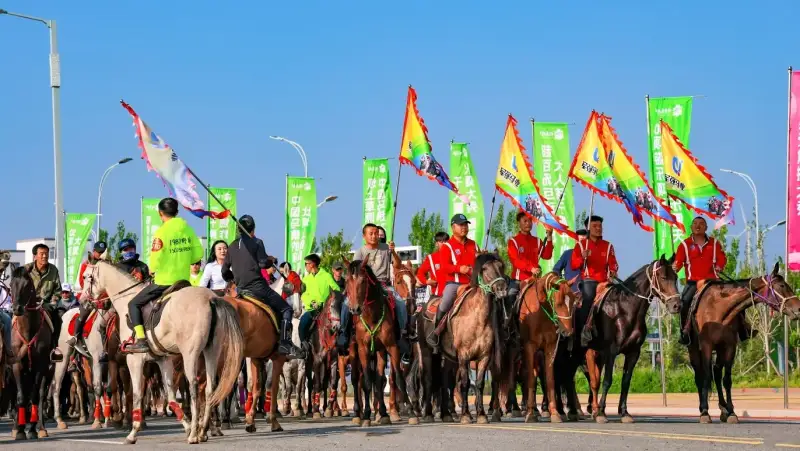

On July 11, the first World Horse Day parade at the China Horse Town resort in Fengning, Hebei, was held successfully. Its theme was 'Ten Thousand Horses Galloping: The Most Beautiful Riders.' The event was led by the Fengning Manchu Autonomous County government. It is the first horse-culture event in the world built around the United Nations resolution on World Horse Day. It marks a deep link between China's horse industry and the international initiative.

A Cultural Event With a Global View
On June 3, 2025, the United Nations General Assembly passed a historic resolution. It named July 11 of each year as World Horse Day. The goal is to protect the world's horse-culture heritage and support the sustainable growth of the industry. China Horse Town is a leading site for horse culture in China. It took the lead in holding a parade of one thousand riders. It organized 1,000 professional riders into mounted formations. They set off from Chenggong Square in the Dancing Horse Park, paraded along Chenggong Street, and reached the Horse Lover Farm. Along the whole route, they showed the unique appeal of Chinese horse culture.

A Dialogue Between Tradition and Modern Times
The parade set up a special cultural display. Equestrian actors dressed in the battle robes of Zhao Yun, a famous ancient general, appeared in formation. Together with traditional equestrian performances, they showed the thousand-year heritage of Chinese horse culture. The modern parade activates the genes of traditional culture. It brings horse culture from history into the daily life of the people. China Horse Town aims to build a spiritual home for horse lovers. It shares the wisdom of today's Chinese horse industry with the world.

Social Value and Lessons for the Industry
This event created a new model: an international theme, broad public participation, and a mix of culture and tourism. It offers an innovative case for rural revitalization. According to the China Horse Industry Association, the scale of China's horse industry has passed 100 billion yuan. It supports jobs for more than 3 million farmers and herders. A representative of the UN Food and Agriculture Organization said: 'China has given real meaning to the World Horse Day initiative through action. It offers a model for protecting the world's horse-culture heritage.'

Building a World-Class Horse-Culture Destination
China Horse Town lies 189 kilometers directly north of Beijing on the Bashang grassland. It is a national AAAA-level scenic area and a provincial-level tourist resort. Built along the theme of the Grassland Silk Road, it gathers the character of 15 countries. It offers 35 exotic shows. It joins an immersive horse-culture experience, the largest horse-themed park in the country, and a cluster of grassland Silk Road shows. It also offers a winter snow village on the Bashang grassland, themed hotels, and shared lodging. It has become a new horse-themed holiday ecosystem that joins food, lodging, transport, sightseeing, shopping, and entertainment. It is a popular choice for all-age fun and family holidays.

This event set up a special 'Most Beautiful Rider' award. The total prize money reached 100,000 yuan. Social media spread the event widely and enlarged its influence. In the future, China Horse Town will keep developing horse culture. It will build an industry cluster that joins study tours, health and wellness, leisure, and food. It is moving toward its goal of being the world's leading horse-culture tourist resort.